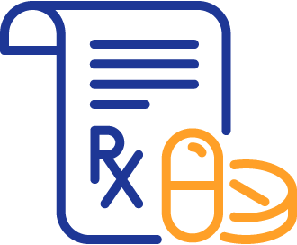
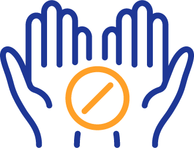
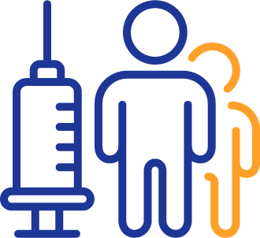

Revive. Survive. OverDose Prevention
for Pharmacists
Naloxone Access & Administration
There have been several legislative efforts to reduce harmful opioid use and increase bystander access to naloxone across the nation as well as locally. They include Prescription Monitoring Programs (PMPs), Good Samaritan Laws, Opioid Antagonist Administration, and Standing Orders.
See Resources for an interactive tool by the Prescription Drug Abuse Policy System (PDAPS), which focuses on state laws that provide civil or criminal immunity to licensed healthcare providers or lay responders for opioid antagonist administration.
In 2017, Louisiana Act 88 (House Bill 490 by Rep. Walt Leger) created a 13-member advisory council on heroin and opioid prevention and education to develop policy recommendations to combat opioid abuse called the HOPE Council.
When the legislature adopts laws affecting pharmacy practice including controlled substances, and when the Board promulgates new rules or rule changes affecting pharmacy practice including controlled substances, those items are updated in the Louisiana Pharmacy Law Book.
See Resources for the most recent listing of laws and rules contained in the Louisiana Pharmacy Law Book.
Click on a legislative effort or the next arrows for more information. | |||
|---|---|---|---|
Prescription Monitoring Programs (PMP)  |
 | Opioid Antagonist Administration  |
|